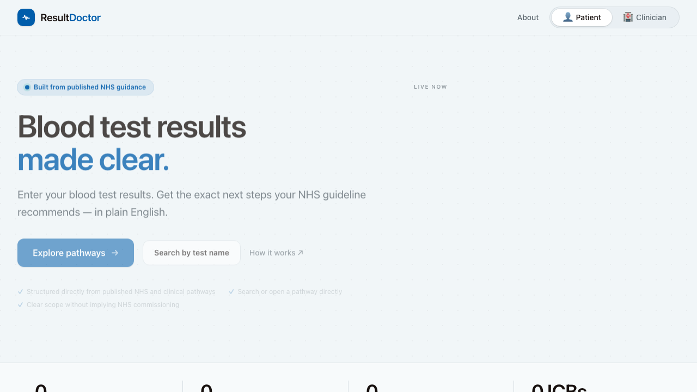
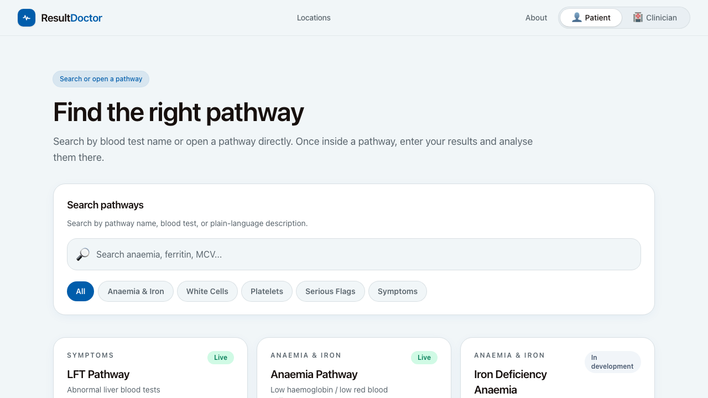
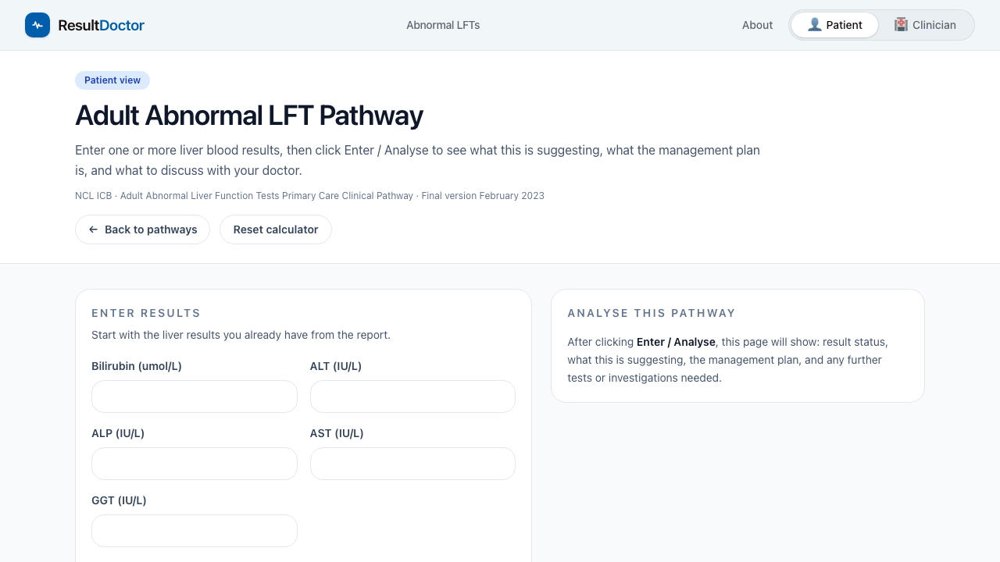
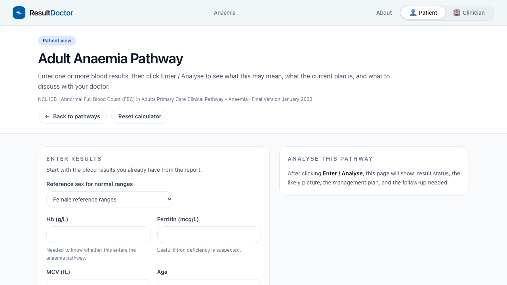

Homepage
Patient and clinician entry point
The homepage now pushes users into a simple pathway flow: explore pathways, search by test name, or open the live pathway tools.

Explore Pathways
Search or open a pathway directly
The catalogue shows live pathways and in-development pathways, with search by pathway name, test name, and plain-language description.

Live LFT Pathway
Possible picture, management, follow-up
The LFT pathway is structured around result entry, likely picture, management plan, and further tests or follow-up.

Live Anaemia Pathway
Guideline-driven anaemia workflow
The anaemia pathway mirrors the same MVP output structure: result status, possible diagnosis or picture, management plan, and follow-up.

Scope note
What this public preview is
This is a free static demo for external viewing on GitHub Pages. It is designed to show the current product clearly to collaborators, friends, and investors.
The working source code for the live calculators remains in the main repository and can be developed independently of this demo page.